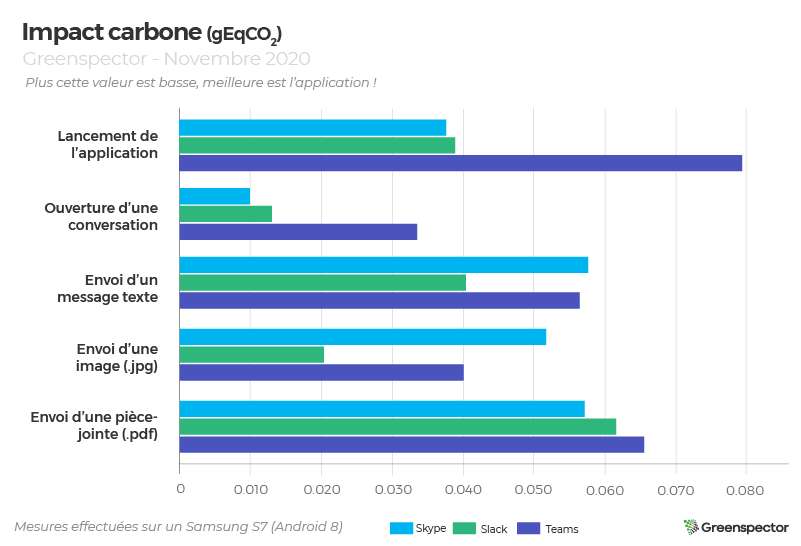
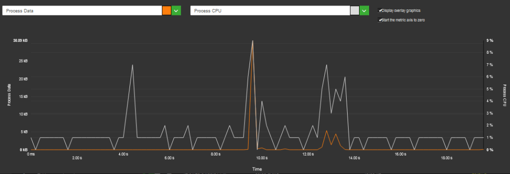
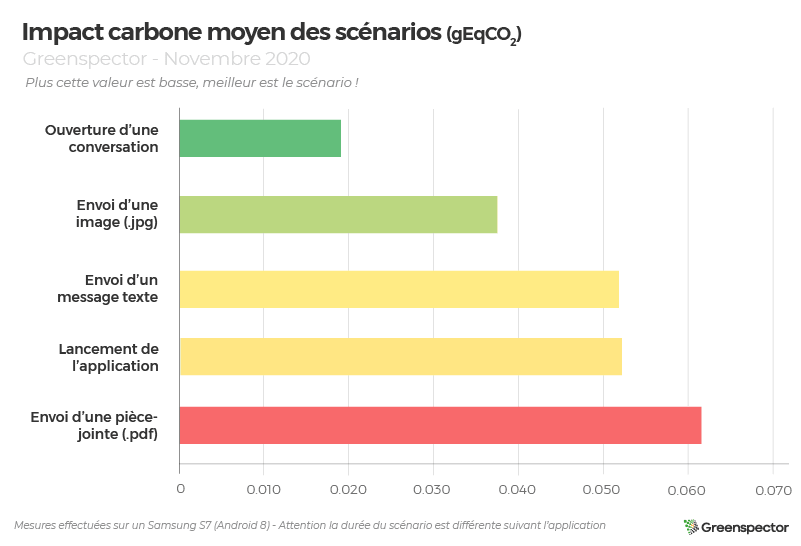
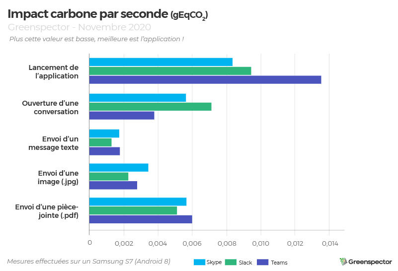
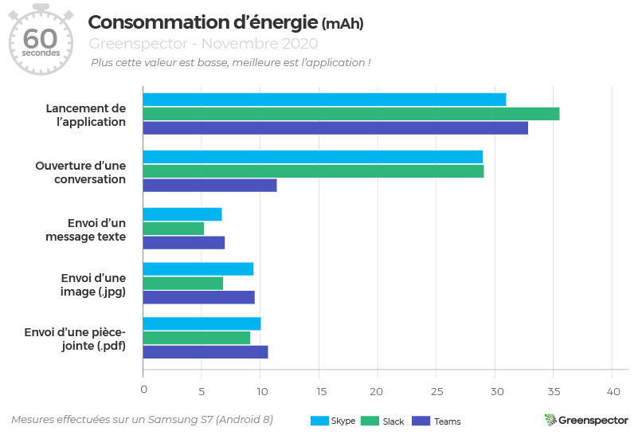
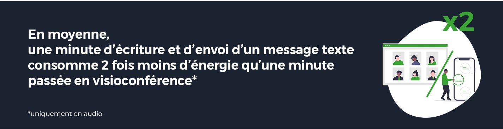

Introduction
Aujourd’hui et plus que jamais, la communication est essentielle en entreprise. Depuis le début de la crise sanitaire, beaucoup d’entreprises et salariés ont découvert le travail à distance. Cette situation exceptionnelle a engendré un changement dans nos habitudes d’interactions : faire communiquer efficacement les équipes entre-elles et ce, à distance, de manière instantanée. Nous avons décidé de comparer les 3 applications de messagerie instantanée pour entreprise les plus populaires : Skype, Slack et Teams.
6 scénarios ont été réalisés sur la base d’un parcours utilisateur moyen :
– Lancement de l’application
– Ouverture d’une conversation vierge one-to-one
– Envoi d’un message texte
– Envoi d’une image (.jpg)
– Envoi d’une pièce-jointe (.pdf)
– Envoi d’une image animée ou GIF (.gif)
Consulter la méthodologie et le détail des scénarios.
Projection en impact carbone

Lors de l’étape de chargement de l’application, l’impact carbone de Skype (0,038 gEqCO2) et Slack (0,039 gEqCO2) est semblable. Teams échange 77% plus de données par rapport à Skype, augmentant donc son impact carbone là où en énergie, l’application Teams présente une consommation similaire aux deux autres.
Sur la partie envoi d’un message texte et envoi d’une image, Slack est l’application la plus efficiente oscillant entre –30% (message) et –60% (image) de moins que Skype, moins bonne application sur ces deux scénarios.
D’une manière générale, Teams consomme beaucoup plus de données. En effet, en moyenne c’est près de 196 Ko là où Skype est à 134 Ko et Slack 113 Ko.
L’application qui obtient la meilleure moyenne d’impact carbone est Slack (0,035 gEqCO2) suivi de près par Skype (0,043 gEqCO2) puis Teams (0,055 gEqCO2), une différence de 36% entre la meilleure et la moins bonne.
Zoom sur les consommations en tâche de fond
Côté arrière-plan de l’application, on remarque plusieurs choses :

La consommation de Slack en arrière-plan est plus élevée que les deux autres. Notamment en terme de données échangées où Skype et Teams n’échangent aucune donnée dans cet état. Slack consomme également en terme de CPU (1,16%) là où Skype consomme 10x moins et où Teams est une fois de plus à zéro. Cette consommation n’est pas liée à la mise en background (traitement de changement d’état) mais perdure dans le temps à la fois sur les états inactivité arrière-plan qu’en inactivité avant-plan.
| Applications | Consommation d’énergie par seconde (µAh/s) | Données échangées (Ko) | CPU (%) |
| Skype | 45,17 | 0 | 0,11 |
| Slack | 57,14 | 42,6 | 1,16 |
| Teams | 44,08 | 0 | 0 |
L’application Slack effectue des traitements en arrière-plan, impactant la batterie et la consommation en énergie et ressources toute la journée. Si on projette cet impact pour un utilisateur qui met son application Slack en background sur son téléphone toute une journée professionnelle (7 heures), on obtient un impact de 26 gEqCO2, soit environ l’impact Carbone d’un véhicule léger moyen conduit sur 230 mètres ! A l’échelle de l’année (220 jours) : ce comportement pour une personne équivaut à 50 km de ce même véhicule. Probablement un gâchis qui pourrait être pris en compte et évité.
Projection en impact Carbone moyen des scénarios

Le scénario présentant le plus faible impact carbone en moyenne des 3 applications mesurées est celui de l’ouverture d’une conversation (0,018 gEqCO2) consommant 69% moins que l’envoi d’une pièce-jointe (0,061 gEqCO2). L’étape d’envoi d’une image est la seconde étape la moins impactante avec +10% de plus que l’ouverture d’une conversation. Enfin, l’envoi d’un message texte et le chargement de l’app sont similaires dans leur impact (moins de 1% de différence).
Disclaimer : A noter que ces scénarios n’ont pas la même durée.
| Scénarios et leur durée (en secondes) | Skype | Slack | Teams |
| Lancement de l’application | 4,52 | 4,13 | 5,88 |
| Ouverture d’une conversation | 1,76 | 1,82 | 8,95 |
| Envoi d’un message texte | 33,3 | 31,78 | 32,19 |
| Envoi d’une image | 15,16 | 9,07 | 14,46 |
| Envoi d’une pièce-jointe | 10,13 | 12,13 | 10,99 |
Ci-dessous, le classement des applications selon leur impact carbone par seconde.

Projection de la Consommation d’énergie des scénarios sur 60 secondes

Côté chargement de l’application, Skype est en tête avec une consommation en énergie de 31 mAh suivi de Teams (32.8 mAh) puis Slack (35.5 mAh). Une différence de 12% entre la première et la dernière application pour cette étape.
Côté ouverture d’une conversation, Teams (11,3 mAh) tire largement son épingle du jeu avec une consommation inférieure de 61% par rapport à Skype et Slack aux côtes à côtes (29 mAh).
Pour les 3 scénarios d’envoi de message texte, d’image ou de pièce-jointe le classement ne change pas : Slack reste en tête suivi de Skype et Teams.
Au final, en additionnant l’ensemble des étapes, c’est l’application Teams qui est la plus efficiente (71,3 mAh) suivi de Slack en deuxième position (85,6 mAh) puis Skype, bon dernier (86,2 mAh).
Rappelons que ce classement est projeté sur une minute d’utilisation. En temps réel, Slack est l’application la plus rapide (11.7 secondes en moyenne temps de réalisation des scénarios), Teams la moins rapide (14,49 secondes) néanmoins Teams est la plus sobre en vitesse de décharge sur le smartphone (237,7 en moyenne contre 285.6 chez Slack ou 287,2 chez Skype).
En moyenne, une minute d’écriture et d’envoi d’un message texte consomme 3,33 mAh soit une consommation 2x moins élevée qu’une minute passée en visioconférence (audio uniquement : 6,60 mAh).

Slack vs Teams : envoi d’un GIF
Slack
Teams
Pour une même fonctionnalité de recherche et d’envoi d’un GIF via Giphy, les deux applications Slack et Teams présentent un parcours utilisateur différent.
En effet, Slack permet en une simple commande, la recherche et l’affichage d’un SEUL GIF via le(s) mot-clé(s) tapé(s) puis offre la possibilité d’en charger un nouveau si le premier ne convient pas. La commande utilisée est la suivante :
/giphy simpsonTeams quant à elle, propose une barre de recherche qui affiche des nouveaux GIFs à chaque nouvelle lettre tapée. Chargeant donc de manière inutile des dizaines et des dizaines de GIFs. Une fois le mot-clé entier « simpson » tapé, la fenêtre de résultats en affiche toujours un certain nombre. Pour ce scénario, nous avons choisi de sélectionner le premier gif des résultats.
Nous observons donc une différence (de taille) entre les deux applications :
| Applications | Durée du scénario (en secondes) | Consommation d’énergie (mAh) | Données échangées (Mo) | Projection en impact Carbone (gEqCO2) |
| Slack | 24,84 | 2,37 | 0,309 | 0,065 |
| Teams | 24,42 | 3,9 | 23 | 2,336 |
On observe que le parcours utilisateur de Slack est beaucoup plus sobre en énergie et ressources que celui de Teams. Notamment pour la partie données échangées (une différence de plus de 22 Mo !), explicable par la quantité de GIFs chargés inutilement par Teams.
La différence de consommation d’énergie entre ces deux apps est de 40% pour une durée de scénario similaire. L’impact carbone est multiplié par 36 pour l’application Teams par rapport à Slack.